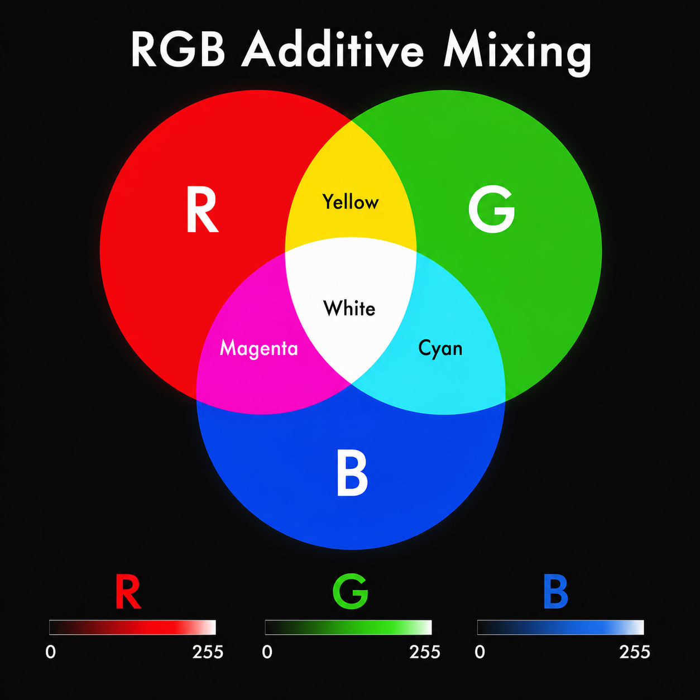
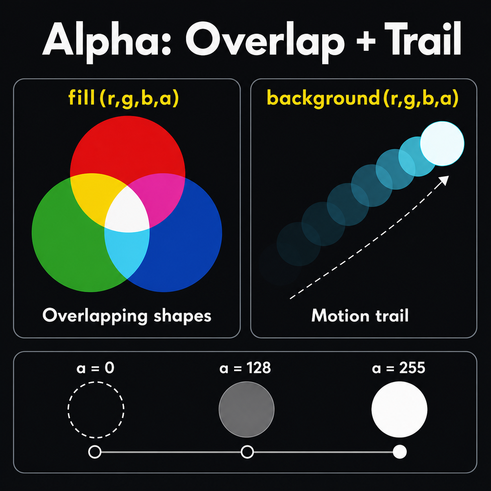
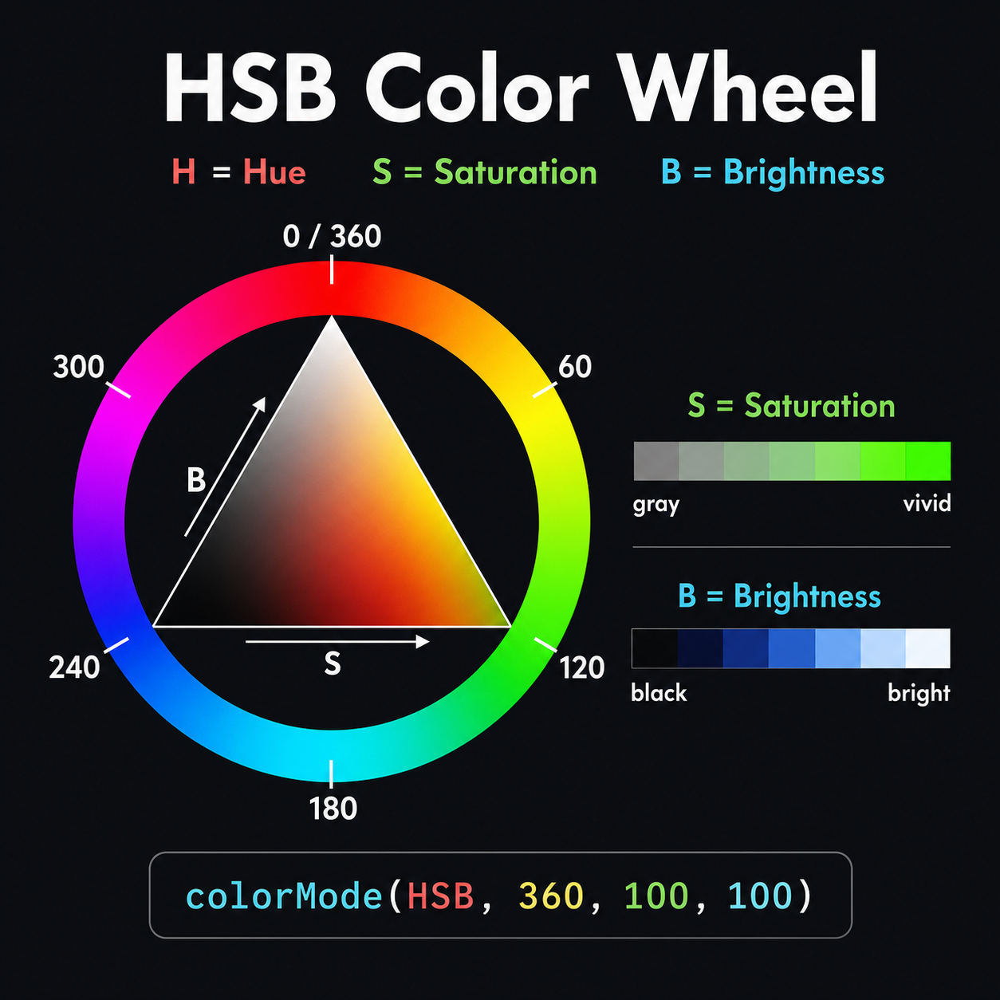
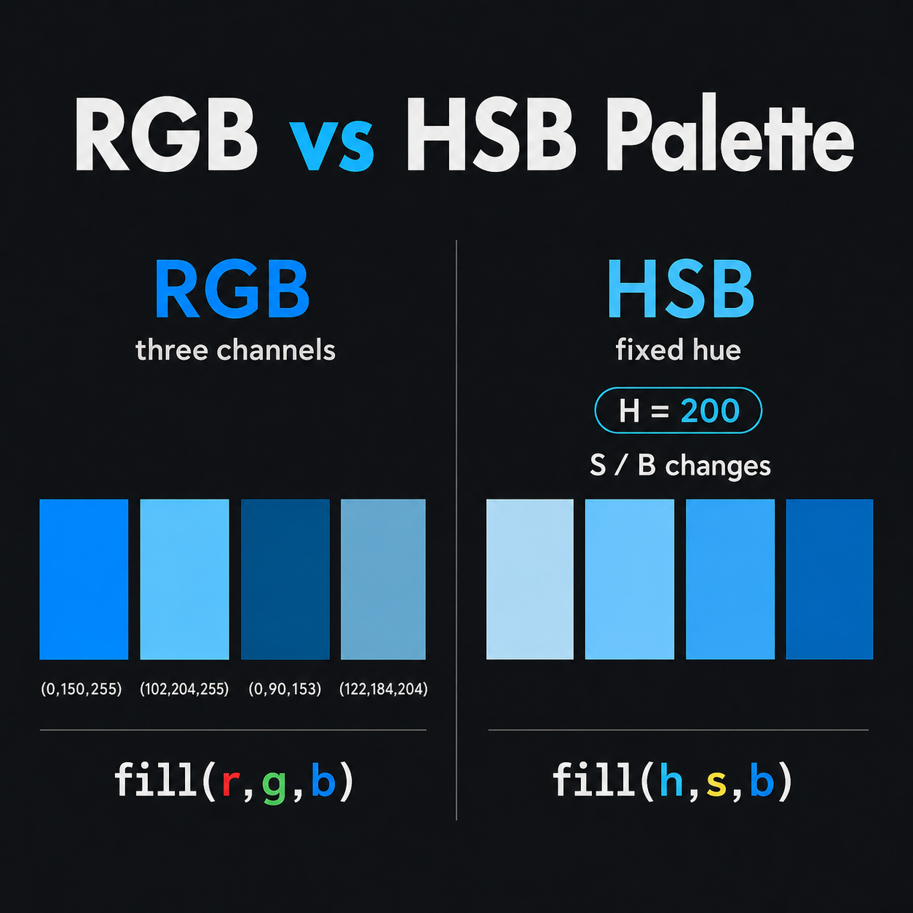

3주차 1교시 — 색상 체계: RGB, HSB, 투명도
강의 아웃라인: week-03-outline 다음 교시: week-03-period2-student (for 반복문과 패턴)
| 항목 | 내용 |
|---|---|
| 대상 | P5.js 입문자 (테크아트 전공) |
| 소요 시간 | 45분 |
| 핵심 도구 | P5.js Web Editor, 구글 Color Picker |
- RGB 색상 모드를 이해하고
fill()·stroke()·background()에 적용할 수 있습니다 - alpha(투명도)의 원리를 이해하고 도형 겹치기·잔상 효과에 활용할 수 있습니다
- HSB 색상 모드를 이해하고 RGB와 상황에 맞게 선택해 쓸 수 있습니다
도입
2주차 연결
지난 주에 마우스를 따라다니는 인터랙티브 캐릭터를 만들었습니다. 빨리 끝낸 사람은 이런 코드도 써봤습니다.
background(255, 220, 180, 30); // 잔상 효과여기서 마지막 숫자 30이 무엇인지, 이번 시간에 그 정체를
배웁니다.
그리고 지금까지 색상이라고 하면 fill(255),
fill(0) 같은 흑백 위주였습니다.
fill(255, 230, 200) 같은 건 알려준 숫자를 그대로
입력해봤습니다. 오늘부터는 원하는 색을 직접 골라서 쓸
수 있게 됩니다.
미디어아트 속 색상 — 다섯 가지 접근
미디어아트에서 색상이 얼마나 중요한지, 다섯 가지 다른 접근을 살펴봅니다.
① 흑백 / 미니멀 — Ryoji Ikeda, test pattern
데이터를 흑백 바코드 패턴으로 변환합니다. 색이 전혀 없는데도 압도적인
강렬함이 있습니다. RGB로 치면 (0,0,0)과
(255,255,255) 두 값만으로 이 모든 걸 만든 것입니다. 참고:
test pattern
(공식 사이트) · 영상 (Vimeo)
② 풀컬러 / 몰입형 — teamLab, Forest of Resonating Lamps - One Stroke 무라노 유리 램프 수백 개가 공간을 채우고, 관람객이 가까이 가면 하나의 색이 켜지면서 인접한 램프로 색이 퍼져나갑니다. 한 가지 색에서 시작해 그라데이션으로 변하며 공간 전체를 물들이는 모습은, 우리가 배울 HSB에서 H(색상) 값을 연속으로 변화시키는 것과 같은 원리입니다. 참고: 공식 사이트
③ 빛과 색의 인지 — Kimsooja, To Breathe — Coachella Valley (2025) 유리 건물 전체를 회절 필름으로 감싸서, 햇빛이 통과하면 무지개 스펙트럼으로 분해됩니다. 태양이 움직이면서 건물 색이 분홍에서 초록, 보라로 계속 바뀝니다. 백색광이 스펙트럼으로 나뉘는 것은, HSB 색상환에서 H를 0~360으로 변화시키는 것과 같은 원리입니다. 참고: Desert X 공식 사이트 · My Modern Met 소개
④ 인터랙티브 / 관객 참여 — Rafael Lozano-Hemmer, Pulse
Topology (2024-2025) 수천 개의 전구가 천장에 매달려 있고,
관람객이 다가가면 심장박동이 감지되어 빛의 밝기와 리듬으로 변환됩니다.
새 관람객의 맥박이 추가될 때마다 가장 오래된 기록이 사라집니다. 생체
데이터를 빛으로 바꾸는 것은, P5.js에서 map() 함수로 센서
값을 색상·밝기에 매핑하는 것과 같은 원리입니다. 참고: 작가 공식
사이트 · Superblue
Miami
⑤ 코드 기반 / 제너러티브 — Tyler Hobbs, Fidenza 하나의 코드 알고리즘에서 999개의 서로 다른 작품이 탄생합니다. 같은 코드인데 색상 팔레트만 바꾸면 완전히 다른 인상이 나옵니다. 파스텔 톤은 부드럽고, 원색 팔레트는 강렬합니다. 참고: 작가 기술 설명
오늘 배우는 RGB와 HSB를 자유자재로 쓸 수 있으면, 여러분의 작품이 표현할 수 있는 세계가 넓어집니다.
핵심 개념 1 — RGB 색상 모드
빛의 삼원색 — 가산혼합
컴퓨터 화면은 빨강(Red), 초록(Green), 파랑(Blue) 세 가지 빛을 섞어서 모든 색을 만듭니다. 이것을 RGB라고 합니다.
미술 시간에 배운 삼원색은 빨강·노랑·파랑이었습니다. 그건 물감의 삼원색(감산혼합)입니다. 물감은 섞을수록 빛을 흡수해서 어두워집니다. 빨강+노랑+파랑을 다 섞으면 거무튀튀한 갈색이 됩니다. 반면 컴퓨터 화면은 빛입니다. 빛은 섞을수록 밝아지는 가산혼합입니다.
| 물감 (감산혼합) | 빛 (가산혼합) | |
|---|---|---|
| 삼원색 | 빨강, 노랑, 파랑 | 빨강(R), 초록(G), 파랑(B) |
| 전부 섞으면 | 어두운 갈색/검정 | 흰색 |
| 아무것도 없으면 | 흰 종이 (밝음) | 검정 (빛이 없음) |
| 빨강 + 초록 | 갈색 비슷 | 노랑 |
(0, 0, 0)이 검정인 이유는 빛이 하나도
없기 때문이고, (255, 255, 255)가 흰색인
이유는 세 가지 빛을 전부 최대로 켰기 때문입니다.
왜 0~255일까?
컴퓨터는 모든 정보를 0과 1로 저장합니다. 8자리의 0/1(= 8비트 = 1바이트)로 표현할 수 있는 숫자가 0부터 255까지, 총 256가지입니다. 하나의 색상 채널에 1바이트씩 배정한 것입니다. 깊이 이해할 필요는 없습니다. 기억할 건 하나 — 0이 최소, 255가 최대.
fill(r, g, b) 기본 문법
각 색상 채널은 0~255 범위이고,
fill(빨강, 초록, 파랑) 순서로 넣습니다.
function setup() {
createCanvas(400, 400);
background(240);
noStroke();
// 빨강
fill(255, 0, 0);
ellipse(100, 200, 80, 80);
// 초록
fill(0, 255, 0);
ellipse(200, 200, 80, 80);
// 파랑
fill(0, 0, 255);
ellipse(300, 200, 80, 80);
}첫 번째 숫자가 빨강, 두 번째가 초록, 세 번째가 파랑입니다. 순서를 외우세요 — R-G-B.
색 혼합 예시
function setup() {
createCanvas(400, 400);
background(240);
noStroke();
// 빨강 + 초록 = 노랑
fill(255, 255, 0);
ellipse(80, 100, 70, 70);
// 빨강 + 파랑 = 보라
fill(255, 0, 255);
ellipse(180, 100, 70, 70);
// 초록 + 파랑 = 청록
fill(0, 255, 255);
ellipse(280, 100, 70, 70);
// 전부 0 = 검정
fill(0, 0, 0);
ellipse(130, 250, 70, 70);
// 전부 255 = 흰색
fill(255, 255, 255);
stroke(200);
ellipse(230, 250, 70, 70);
noStroke(); // 테두리 설정 복원
}흰색 원은 배경과 구분되지 않아서 테두리를 넣었습니다. 모든 값이 255면 흰색, 모든 값이 0이면 검정입니다.

stroke()와
background()에도 동일 적용
fill()만 색을 바꿀 수 있는 게 아닙니다.
stroke()와 background()도 똑같이 RGB를
받습니다.
function setup() {
createCanvas(400, 400);
background(30, 30, 80); // 어두운 남색 배경
// 테두리 색도 RGB로 지정
stroke(255, 255, 0); // 노란색 테두리
strokeWeight(4); // 테두리 두께
fill(100, 200, 255); // 하늘색 채우기
ellipse(200, 200, 150, 150);
}채우기, 테두리, 배경 세 가지 모두 RGB로 제어할 수 있습니다.
fill() 인자 개수 정리
| 인자 수 | 형태 | 의미 | 예시 |
|---|---|---|---|
| 1개 | fill(v) |
회색 (0=검정, 255=흰) | fill(128) → 중간 회색 |
| 3개 | fill(r, g, b) |
RGB 색상 | fill(255, 0, 0) → 빨강 |
| 4개 | fill(r, g, b, a) |
RGB + 투명도 | fill(255, 0, 0, 128) → 반투명 빨강 |
stroke()와 background()도 똑같은
규칙입니다. 인자 수에 따라 동작이 달라집니다.
구글 Color Picker
원하는 색의 RGB 값은 외울 필요가 없습니다.
- 구글에서 “color picker” 검색
- 색상 선택기에서 원하는 색 클릭
- RGB 값 확인 → 코드에
fill(R, G, B)형태로 복사
전문 디자이너도 이렇게 합니다. 색상값이 필요할 때 이 도구를 쓰세요.
fill(0, 128, 255)를 쓰면 어떤 색이 나올까요?
답: 빨강은 0, 초록은 중간, 파랑은 최대 — 밝은 하늘색입니다.
핵심 개념 2 — 투명도 (alpha)
alpha란?
RGB 뒤에 네 번째 숫자를 추가하면
투명도(alpha)를 조절할 수 있습니다.
fill(255, 0, 0, 128)은 반투명한 빨강입니다.
| alpha 값 | 의미 |
|---|---|
0 |
완전 투명 (안 보임) |
128 |
반투명 (50%) |
255 |
완전 불투명 (기본값) |
alpha를 안 쓰면 기본값이 255입니다. 지금까지
fill(255, 0, 0)이라 쓴 건 사실
fill(255, 0, 0, 255)와 같았습니다.

반투명 원 겹치기
반투명 도형을 겹치면 빛이 섞이는 효과를 만들 수 있습니다.
function setup() {
createCanvas(400, 400);
background(240);
noStroke();
// 반투명 빨강
fill(255, 0, 0, 100);
ellipse(170, 180, 160, 160);
// 반투명 초록
fill(0, 255, 0, 100);
ellipse(230, 180, 160, 160);
// 반투명 파랑
fill(0, 0, 255, 100);
ellipse(200, 240, 160, 160);
}세 원이 겹치는 가운데 부분을 보세요. 빨+초+파가 섞여서 밝은 색이
됩니다. 빛이니까 섞을수록 밝아지는 가산혼합입니다.
alpha 값을 100 대신 50이나
200으로 바꾸면 겹치는 부분의 색이 달라집니다.
stroke()에도 alpha 적용
fill()뿐만 아니라 stroke()에도 alpha를 넣을
수 있습니다.
function setup() {
createCanvas(400, 400);
background(240);
noFill();
strokeWeight(6);
// 반투명 테두리 원 여러 개 겹치기
stroke(255, 0, 0, 80);
ellipse(150, 200, 200, 200);
stroke(0, 0, 255, 80);
ellipse(250, 200, 200, 200);
stroke(0, 180, 0, 80);
ellipse(200, 140, 200, 200);
}noFill()로 채우기를 없애고 테두리만 남기면, 선만으로
색이 섞이는 효과를 만들 수 있습니다. 올림픽 로고 같은 느낌입니다.
2주차 잔상 효과의 원리
2주차에서 background(255, 220, 180, 30)을 쓰면 잔상이
남았습니다. background()에 alpha를 넣으면, 매 프레임마다
반투명한 배경을 덮는 방식입니다. 완전히 지우는 게
아니라 살짝만 덮으니까, 이전 프레임의 그림이 서서히 사라집니다.
background() 설정 |
효과 |
|---|---|
background(220) |
매 프레임 완전히 덮음 → 잔상 없음 |
background(220, 30) |
매 프레임 살짝만 덮음 → 잔상 있음 |
background() 없음 |
안 덮음 → 이전 그림 전부 남음 |
fill(0, 0, 255, 0)을 쓰면 어떻게 될까요?
답: alpha가 0이니까 완전 투명 — 그려도 아무것도 안 나타납니다.
핵심 개념 3 — HSB 색상 모드
RGB의 한계
RGB로 하늘색 fill(0, 100, 255)를 만들었다고 합시다. 이
색을 좀 더 어둡게 만들려면 세 숫자를 각각 얼마나 줄여야
할까요? 감이 잘 오지 않습니다. 파스텔 톤으로 바꾸려면
R을 올릴지 G를 올릴지도 막막합니다.
HSB 색상 모드는 이 문제를 해결합니다. ‘어둡게 하고 싶으면 밝기 숫자 하나만 줄이면 된다’ — 이렇게 직관적으로 색을 다룰 수 있습니다.
colorMode(HSB) 선언
HSB를 쓰려면 setup() 안에 한 줄만 추가합니다.
function setup() {
createCanvas(400, 400);
colorMode(HSB, 360, 100, 100, 255); // HSB 모드 전환
}이 한 줄 이후로 fill(), stroke(),
background()가 전부 HSB 기준으로 동작합니다. 숫자 네 개는
순서대로 H 범위(360), S 범위(100), B 범위(100), alpha
범위(255)입니다. 마지막 255를 넣어야 투명도가 RGB와 똑같이
0~255로 동작합니다.
H, S, B 각각의 의미
HSB는 색상환(Color Wheel)을 기반으로 합니다. 모든 색을 원형으로 배치한 것으로, 빨강에서 시작해 주황·노랑·초록·파랑·보라를 거쳐 다시 빨강으로 돌아옵니다.

H (Hue, 색상) — 0~360
색상환을 시계처럼 생각하세요. 0도부터 한 바퀴(360도) 돌면 원래 색으로 돌아옵니다.
| H 값 | 색상 |
|---|---|
| 0 (= 360) | 빨강 |
| 30 | 주황 |
| 60 | 노랑 |
| 120 | 초록 |
| 180 | 청록 |
| 240 | 파랑 |
| 270 | 보라 |
| 300 | 분홍 |
색상환의 구간별 분위기도 알아두면 좋습니다.
| H 구간 | 분위기 | 대표 색 |
|---|---|---|
| 0 ~ 60 | 따뜻한 색 (warm) | 빨강, 주황, 노랑 |
| 60 ~ 180 | 자연/차가운 전환 | 초록, 청록 |
| 180 ~ 270 | 차가운 색 (cool) | 파랑, 보라 |
| 270 ~ 360 | 따뜻한 쪽으로 회귀 | 분홍, 마젠타 |
작품의 분위기를 정할 때 H 구간을 먼저 정하면 컬러 톤이 자연스럽게 잡힙니다.
S (Saturation, 채도) — 0~100
채도는 색이 얼마나 선명한지입니다. 100이면 원색 그대로, 0이면 색이 빠져서 회색입니다. 파스텔 톤을 만들고 싶으면 S를 낮춥니다. H는 그대로 두고 S만 바꾸면 같은 색 계열에서 톤만 달라집니다.
B (Brightness, 밝기) — 0~100
밝기는 밝고 어두운 정도입니다. 100이면 밝고, 0이면 항상 검정입니다. 어두운 분위기를 만들고 싶으면 B를 낮춥니다.
미술 용어와의 연결
| 미술 용어 | 의미 | HSB에서는 |
|---|---|---|
| Tint (틴트) | 원색에 흰색을 섞음 | S를 낮추면 됨 (파스텔) |
| Shade (셰이드) | 원색에 검정을 섞음 | B를 낮추면 됨 (어두운 톤) |
| Tone (톤) | 원색에 회색을 섞음 | S와 B를 함께 조절 |
미술에서 배운 개념이 HSB에서는 숫자 하나 바꾸는 것으로 그대로 옮겨옵니다.
HSB 색상 비교
function setup() {
createCanvas(400, 400);
colorMode(HSB, 360, 100, 100, 255);
background(0, 0, 100); // 흰 배경 (HSB에서 B=100)
noStroke();
// 같은 빨강, 채도만 다르게
fill(0, 100, 100); // 선명한 빨강
ellipse(80, 100, 70, 70);
fill(0, 60, 100); // 중간 채도 빨강
ellipse(170, 100, 70, 70);
fill(0, 30, 100); // 파스텔 빨강 (연분홍)
ellipse(260, 100, 70, 70);
// 같은 파랑, 밝기만 다르게
fill(240, 100, 100); // 밝은 파랑
ellipse(80, 250, 70, 70);
fill(240, 100, 60); // 중간 파랑
ellipse(170, 250, 70, 70);
fill(240, 100, 30); // 어두운 파랑 (남색)
ellipse(260, 250, 70, 70);
}위 줄은 빨강의 채도만, 아래 줄은 파랑의 밝기만 바꾼 것입니다. RGB로 하려면 세 숫자를 다 건드려야 하는데, HSB는 한 숫자만 바꾸면 됩니다.
HSB의 실용: 색상 팔레트 만들기
HSB의 핵심 장점은 같은 색 계열의 팔레트를 쉽게 만들 수 있다는 것입니다. H를 고정하고 S나 B만 바꾸면 됩니다.
function setup() {
createCanvas(400, 400);
colorMode(HSB, 360, 100, 100, 255);
background(0, 0, 100);
noStroke();
// H=200(하늘색 계열)을 고정하고 S와 B 조합
fill(200, 100, 100); // 선명하고 밝은
rect(20, 50, 70, 70);
fill(200, 60, 100); // 파스텔 밝은
rect(110, 50, 70, 70);
fill(200, 100, 60); // 선명하고 어두운
rect(200, 50, 70, 70);
fill(200, 40, 80); // 부드럽고 중간
rect(290, 50, 70, 70);
}H=200 하나만 고정했는데 네 가지 다른 톤이 나옵니다. RGB로는 이 규칙성이 보이지 않습니다.
RGB vs HSB
| 상황 | RGB | HSB |
|---|---|---|
| 주황색 만들기 | fill(255, 165, 0) — 외워야 함 |
fill(30, 100, 100) — 색상환 30도 |
| 파스텔 톤으로 바꾸기 | R, G, B 각각 조절 — 감 필요 | S만 낮추면 됨 |
| 어둡게 만들기 | R, G, B 각각 낮추기 | B만 낮추면 됨 |
| 무지개 만들기 | 각 색마다 R,G,B 직접 지정 | H를 0~360으로 변화 |

HSB가 항상 좋은 건 아닙니다. 정확한 색이 정해져 있을 때(브랜드 색상
등)는 RGB가 낫고, 색을 규칙적으로 변화시킬 때는 HSB가 훨씬 편합니다.
2교시에서 for 반복문을 배우면 H 값을 0~360으로 변화시켜
무지개를 코드 한 줄로 만들 수 있습니다.
Color Picker에서 색을 고르면 HSV 값도 표시됩니다. HSV는 HSB와 같습니다 (V = Value = Brightness). HSL이라는 비슷한 모드도 보이는데, P5.js에서는 HSB를 쓰니까 HSV 탭을 보세요.
HSB에서 fill(120, 100, 100)은 무슨 색일까요?
답: H=120이니까 색상환에서 초록, S=100 선명, B=100 밝음 → 선명한 초록입니다.
예제
예제 1 — RGB ↔ HSB 같은 색 만들기
같은 색을 RGB와 HSB 두 방식으로 만듭니다.
function setup() {
createCanvas(400, 400);
noStroke();
// 왼쪽: RGB 모드 (기본)
colorMode(RGB, 255, 255, 255);
fill(255, 100, 50); // RGB로 주황 비슷한 색
rect(0, 0, 200, 200);
fill(100, 200, 255); // RGB로 하늘색
rect(0, 200, 200, 200);
// 오른쪽: HSB 모드
colorMode(HSB, 360, 100, 100, 255);
fill(20, 80, 100); // HSB로 주황 비슷한 색
rect(200, 0, 200, 200);
fill(200, 60, 100); // HSB로 하늘색
rect(200, 200, 200, 200);
}왼쪽이 RGB, 오른쪽이 HSB로 만든 비슷한 색입니다. RGB는 숫자 세 개를 조합해야 하고, HSB는 색상환에서 각도를 잡으면 되니까 더 직관적입니다.
예제 2 — 반투명 겹치기
function setup() {
createCanvas(400, 400);
colorMode(HSB, 360, 100, 100, 255);
background(0, 0, 95);
noStroke();
// 반투명 빨강, 초록, 파랑 원
fill(0, 80, 100, 128); // alpha 128 = 반투명 (RGB와 동일한 0~255 범위)
ellipse(160, 170, 180, 180);
fill(120, 80, 100, 128);
ellipse(240, 170, 180, 180);
fill(240, 80, 100, 128);
ellipse(200, 260, 180, 180);
}겹치는 부분에서 색이 자연스럽게 섞입니다. 이런 효과를 만들 수 있는 것이 alpha의 힘입니다.
예제 3 — 구글 Color Picker로 색 찾기
원하는 색을 찾아서 코드에 적용하는 과정입니다.
- 구글에서 “color picker” 검색 → 색상 선택기 열기
- 원하는 색 클릭 (예: 산호색)
- RGB 값 확인:
(255, 127, 80)→fill(255, 127, 80)입력 - HSV 탭으로 전환: 같은 색이
H=16, S=69, V=100인 것을 확인 colorMode(HSB, 360, 100, 100, 255)선언 후fill(16, 69, 100)입력- 두 결과가 같은 색인지 비교
RGB든 HSB든 Color Picker에서 바로 값을 복사하면 됩니다.
- RGB: 숫자 세 개로 정확한 색 지정에 유리
- HSB: 색의 변화(그라데이션, 무지개, 밝기 조절)에 유리
- alpha: 겹침과 투명도 효과
- Color Picker: 원하는 색의 값을 찾는 실용 도구
정리
- RGB — 빨강(R), 초록(G), 파랑(B)을 각각 0~255로 조합. 빛의 삼원색
- HSB — 색상환(H, 0~360), 채도(S, 0~100), 밝기(B, 0~100). 색의 변화를 다룰 때 직관적
- alpha — 네 번째 인자로 투명도 조절. 0=투명, 255=불투명 (RGB·HSB 모두 동일)
2교시 예고
이제 색상을 자유롭게 다룰 수 있습니다. 2교시에서는 같은
코드를 수백 번 반복하는 for 반복문을 배웁니다.
반복문과 HSB를 결합하면 코드 3줄로 무지개를 만들 수
있습니다.